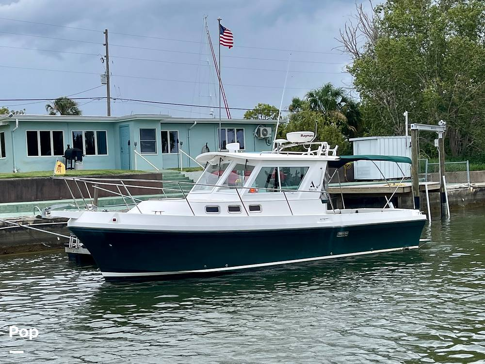

Albin 28 Tournament Express Flush Deck
2003–2007
The flush-deck Albin 28 Tournament Express is the later cockpit arrangement of the 28 TE family. Moving the engine forward beneath the helm deck removes the central engine box and creates a flatter, more useful cockpit, while narrowing the quarter berth and making machinery access less direct. It retains the same modified-V Downeast hull, protected shaft drive and single-diesel cruising character.

- Length
- 29.92 ft
- Beam
- 10 ft
- Draft
- 3.17 ft
- Hull behaviour
- Planing
- Fuel
- Diesel
- Propulsion
- Shaft
- Engine configuration
- Single Inboard
- Boat family
- Downeast
- Construction
- Fiberglass
Best for
- Anglers and couples prioritizing a flat cockpit
- Coastal cruising with weather protection
- Buyers willing to trade machinery access for cockpit utility
Trade-offs
- Machinery access is less direct than on the engine-box version
- Quarter-berth space is reduced by the relocated engine
- Cabin remains compact for extended liveaboard use
- High-output diesel cooling and exhaust systems demand maintenance
Known concerns
- No model-specific concern has been promoted to B-Scout’s evidence threshold. This does not mean the model has no age-, condition- or hull-specific risks.
Inspection focus
- Inspect deck core, cockpit drains and transom structure
- Verify engine mounts, shaft alignment, shaft seal and steering gear
- Review exhaust, aftercooler and raw-water cooling service
- Inspect fuel tank, hoses and access
- Confirm configuration-specific machinery access and modifications
Continue researching
Related boat models
29.92 ft · Planing
36.75 ft · Planing
31.42 ft · Semi-Displacement
26.75 ft · Semi-Displacement
26.75 ft · Semi-Displacement
25 ft · Displacement
About this record
B-Scout preserves uncertainty: missing information remains unknown rather than being treated as a negative. Specifications and guidance describe the model record; individual boats can differ by year, equipment, refit and condition.